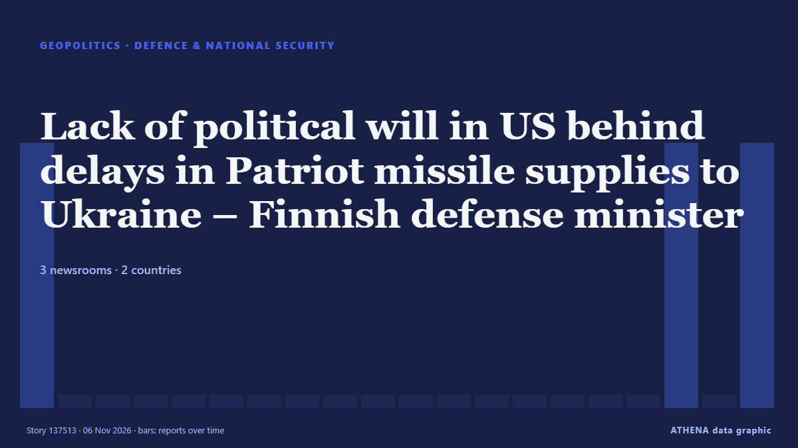

Defensa y seguridad nacional
PatrocinadoPresentado por  Cybernetics and Artificial Intelligence Lab Welcome to the Cybernetics and Artificial Intelligence Laboratory, established at the Department of Business Administration of the National and Kapodistrian University of Athens. The lab is headed by Professor Dimitrios Thomakos. The lab aims to do research that can be published in top venues. Our research uses tools and methods of Artificial Intelligence, and lies in the following areas: - Forecasting - Decision making - Cyber security - Finance We are always looking forward to collaborating with exceptional students!
Cybernetics and Artificial Intelligence Lab Welcome to the Cybernetics and Artificial Intelligence Laboratory, established at the Department of Business Administration of the National and Kapodistrian University of Athens. The lab is headed by Professor Dimitrios Thomakos. The lab aims to do research that can be published in top venues. Our research uses tools and methods of Artificial Intelligence, and lies in the following areas: - Forecasting - Decision making - Cyber security - Finance We are always looking forward to collaborating with exceptional students!
| 25 oct | 0 |
|---|---|
| 26 oct | 0 |
| 27 oct | 0 |
| 28 oct | 0 |
| 29 oct | 0 |
| 30 oct | 1 |
| 31 oct | 0 |
| 1 nov | 0 |
| 2 nov | 2 |
| 3 nov | 7 |
| 4 nov | 5 |
| 5 nov | 7 |
| 6 nov | 2 |
| 7 nov | 0 |
Los titulares se muestran en inglés, tal como se publicaron.

Lack of political will in US behind delays in Patriot missile supplies to Ukraine – Finnish defense minister
European allies have already paid for interceptor missiles for Patriot air defense systems, but Washington has yet to approve their delivery, as Ukraine prepares for new Russian attacks on its energy… de Ukrinform (English)
Hegseth vows to keep fighting from Pentagon, defends Iran war
Democrats, who won control of Congress in Tuesday's elections, have promised to investigate the defence secretary and his handling of the Pentagon. de Free Malaysia Today
N. Korea says Japan's push to raise defense spending will only burden its people
SEOUL, Nov. 6 (Yonhap) -- North Korea on Friday criticized Japan's push to incre... de Yonhap (English)
Naval Group hands over second Hellenic Navy FDI frigate
On October 30, in Lorient, Naval Group delivered the second FDI frigate for the Hellenic Navy (FDI HN), HSNearchos. de Naval Today
Ticking clock: Ireland's €31bn welfare bill, including €13bn for pensions, with low unemployment
With Social Protection spending approaching €31 billion, just how sustainable will the system be when the good times end? de TheJournal.ie
Democrats win governorships in Texas and other GOP-controlled states in rebuke to Republicans
The wins delivered a majority of governorships to Democrats for the first time in two decades, allowing them to put up a stronger defense against Trump's second-term agenda. de PBS NewsHour
Thailand bans textbook on national security grounds
The second edition of the 'Routledge Handbook of Contemporary Thailand' was edited by Japan-based academic and Thai monarchy critic Pavin Chachavalpongpun. de Free Malaysia Today
Fairbanks Morse Defense unveils AutoHook for Fully Autonomous Vessel Recovery at EURONAVAL 2026
Developed by FMD’s Vestdavit, the industry-first interface requires zero human intervention and is designed for interoperability among allied navies. de Cyprus Shipping News
Saudi, Syrian defence ministries sign cooperation agreement, SPA reports
CAIRO, Nov 4 - Saudi Arabia and Syria signed a cooperation agreement between the two countries' defense ministries on Wednesday, Saudi state news agency SPA reported, as Yemen's Iran-aligned Houthi… de The Straits Times
N. Korea says it test-fired new air defense missile system
SEOUL, Nov. 5 (Yonhap) -- North Korea said Thursday it test-fired a newly design... de Yonhap (English)
Israeli SPIKE Missiles for Cyprus National Guard – Boosting Deterrence Capabilities
NICOSIA – “For Cyprus, SPIKE missiles make a significant contribution to our overall deterrence capabilities,” Deputy Chief of the National Guard Neophytos Pachoulides said during a presentation of… de The National Herald
Iran MP says if US attacks from Europe we'll strike their bases including in Italy
(ANSA) - ROME, 04 NOV - An Iranian MP said Wednesday that if the US attacks them from Europe, the Islamic Republic will strike their bases, including those in Italy. de ANSA English
Defence min inks Rs 53,866cr deal with GRSE & GSL for 8 next-gen corvettes for Navy
The Indian Defence Ministry signed contracts with two shipyards for constructing eight next generation corvettes. de Times of India
Nacsa raises cybersecurity threat level from ‘low’ to ‘medium’
The National Security Council indicates this is a precautionary measure taken in light of current security developments, aimed at ensuring the nation’s essential services remain operational. de Free Malaysia Today
N. Korea's Kim inspects Nampho shipyard, calls for rapid naval buildup
SEOUL, Nov. 4 (Yonhap) -- North Korean leader Kim Jong-un has visited the Nampho... de Yonhap (English)
Iran will not stand idle if US uses nuclear weapons, deputy FM warns
Iran’s Deputy Foreign Minister for Legal and International Affairs Kazem Gharibabadi warned that any decision to use nuclear weapons against Iran would have consequences far beyond the region. de AzerNews
Thyssenkrupp CEO says Canada submarine contest with Hanwha was 'very close'
Thyssenkrupp CEO Miguel Lopez acknowledged the fierce competition between its naval shipbuilding arm TKMS and South Korea’s Hanwha Ocean in Canada’s recent submarine procurement contest, while… de Korea Herald
Launch ceremony set for latest indigenously-built attack submarine
SEOUL, Nov. 3 (Yonhap) -- The Navy was set to hold a launching ceremony Tuesday ... de Yonhap (English)
Russian Defense Minister Hails ‘Unprecedented’ Beijing Ties on China Visit
Russian Defense Minister said Moscow’s strategic partnership with Beijing had reached an “unprecedentedly high level” during talks in China. de Kyiv Post